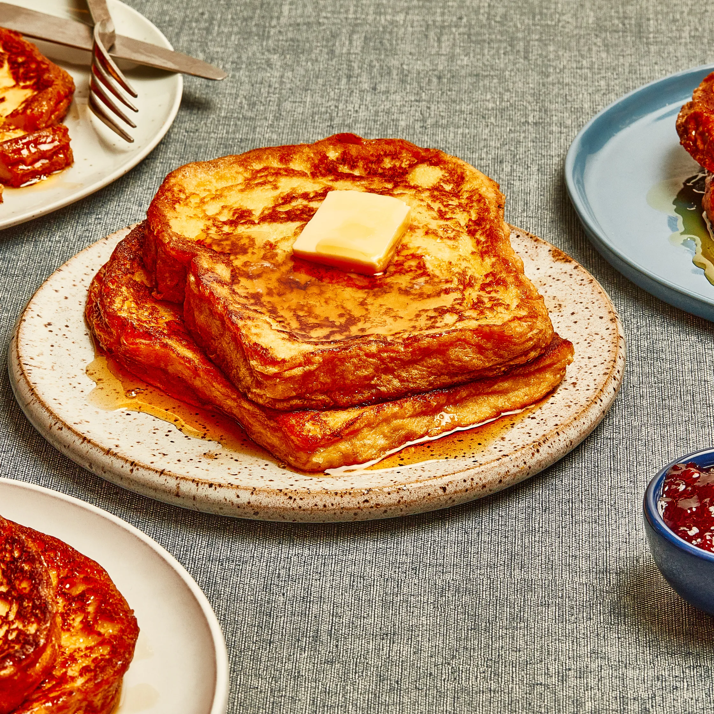

French Toast
Home

Our best French toast recipe lives dangerously close to bread pudding. Thick, sturdy slices of white bread are soaked in custard for no less than 10 minutes on each side. Yes, 10 minutes on each side.
Try this with any old sandwich bread, and you’ll be met with a disintegrated mess. But, if you secure a loaf of eggy brioche or challah, or a pillowy Pullman bread, the results of this long, leisurely bath are slices fully enriched with eggs and cream that taste as decadent upon first bite as they do at the last.
Ingredients
- 4 large eggs
- 1 cup whole milk
- 1 teaspoon vanilla extract
- 1/2 teaspoon ground cinnamon
- 8 slices of brioche or challah bread
- Butter for cooking
- Maple syrup for serving
Steps
- In a large bowl, whisk together the eggs, milk, vanilla extract, and cinnamon.
- Dip each slice of bread into the egg mixture, allowing it to soak for about 10 minutes on each side.
- Heat a skillet over medium heat and add a tablespoon of butter.
- Cook the soaked bread slices in the skillet until golden brown on both sides, about 3-4 minutes per side.
- Serve warm with maple syrup.